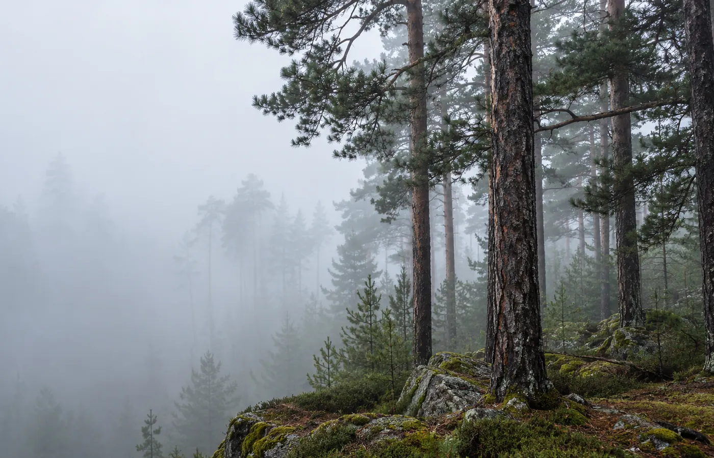

Misty mornings
Forest valley
Paths between the trees, cool mornings and a house with no alarm clock. For those who miss the quiet.
Choose this direction
Forest quiet. Water close by. A few days to find your own rhythm again.
Auvrėja is a set of small, invented retreats for people who want things simple. Nature sets the rhythm of the day, and you decide how much of it to join.
Few places. Lots of space.
Each direction asks you to stop in its own way.

Paths between the trees, cool mornings and a house with no alarm clock. For those who miss the quiet.
Choose this direction
Morning water, slow tea on the terrace and a sunset that needs no plan.
Choose this direction
Open architecture, a garden outside the window and calm rooms for a day at your own pace.
Choose this directionA quiet walk along the forest path. Breathing practice, and breakfast whenever you want it. Time that does not need filling.
Choose a time of day and the photograph, the ritual and the light of the page change with it. Selected: morning.
A slow walk with no goal and no distance. Only trees, air and your own steps.
A simple breathing practice in a small group. No preparation needed.
Warm tea by the water. Talk or silence — the choice is always yours.
Choose a place, dates and what you would like to do. We will show you an outline of your stay.
This is a demonstration. Nothing is saved or sent anywhere. No real bookings are taken.